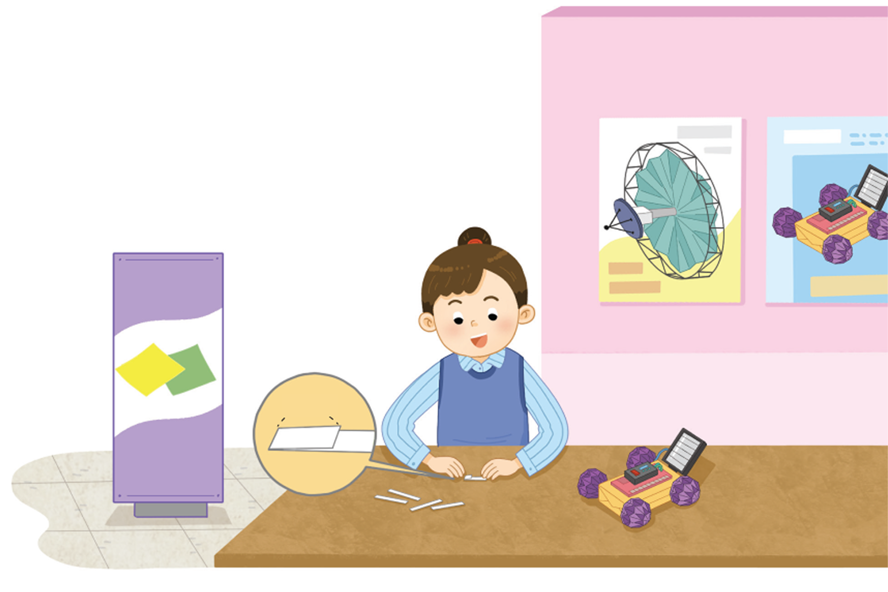

길이가 10 ㎝인 종이를 한 칸의 길이가 2.5 ㎝가 되도록 똑같이 나누어 접으려고 합니다. 종이를 몇 칸으로 나누어 접을 수 있는지 알아봅시다.
2.5 ㎝
인공위성 등 첨단
과학 기술에 활용
되는 종이접기 기술을
알아보세요.
종이접기
체험

영상을 보고, 종이를 몇 칸으로 나누어 접을 수 있는지를 어떻게 구할 수 있을지 이야기해 봅시다.
전체 종이의 길이를 한 칸의 길이로 나눕니다.
입력타입토글
리셋
제출